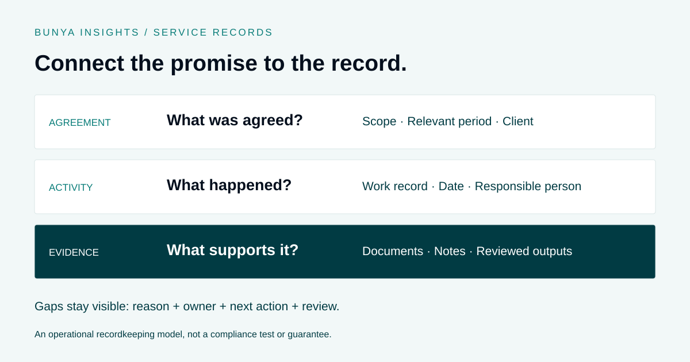

Governance & evidence
Ongoing Advice Services: How to Document Service Delivery
Keep the service record connected to the work your team completes.

Separate the agreement from the activity
An agreement describes what is intended. Meeting records, completed tasks and supporting documents describe what happened. Treating either as a substitute for the other makes the history harder to understand.
Map the records your firm expects to retain with the people responsible for its service and governance processes. This article describes an operational approach, not a statement of regulatory requirements.
Attach evidence as the work progresses
Agree where each supporting item belongs and who is responsible for filing it. A document attached to the relevant client or matter is easier to interpret than an isolated file with an unclear name.
Use meaningful dates, owners and status changes. If a task is marked complete, make clear what completion means and which record supports it.
Make exceptions visible
Client circumstances change. Meetings move, information arrives late and some work cannot proceed as planned. Record the context and the next action rather than leaving an unexplained gap.
An exception queue gives a responsible person somewhere to review these items. It should distinguish unfinished work from work that has been deliberately deferred or changed.
Test whether another person can follow the record
Choose a small sample and ask an authorised colleague to reconstruct the sequence using the system. Can they find the agreement, activity, relevant documents and unresolved items?
Command Centre can support connected records and workflows, but software alone does not prove a firm has met its obligations. The record structure and review process need to reflect the firm’s requirements.
A worked example: the meeting happened, but an action is still open
Imagine an agreed client review includes a meeting and a follow-up action. The meeting has taken place, but the follow-up is waiting for information. This is an illustrative process example, not a customer case study or an assessment of legal obligations.
- Link the intended service. The team connects the review work to the relevant agreement and service period so a reviewer can see the context.
- Record the activity. The meeting record identifies the date, participants and the relevant notes or documents.
- Separate completed and outstanding work. The meeting can be recorded as held while the follow-up remains open. A single “complete” label should not conceal the unfinished action.
- Explain the gap. The record identifies the information being awaited, the responsible person and the next check date.
- Review the outcome. An authorised person checks the completed follow-up and supporting record against the firm’s criteria before closing that action.
This makes the history easier to follow. It does not, by itself, determine whether a fee may be charged or whether an obligation has been satisfied.
What belongs in a useful service record?
| Record | Question it helps answer |
|---|---|
| Agreement and relevant period | What service was intended, for which client and period? |
| Task or activity | What work was carried out, when and by whom? |
| Source material | Which notes, documents or correspondence support the account of the work? |
| Review decision | Who checked the output and what did they decide? |
| Exception | What is missing, changed or unfinished, and who is managing it? |
| Access and retention | Can the right people find the record, and is it managed under the firm’s requirements? |
A field being populated is not proof that its contents are accurate. Use a review process that checks the substance of the record as well as its presence.
A checklist for reviewing a sample file
Select a file and ask an authorised colleague who was not involved in the work to follow it:
- Can they identify the agreed service and relevant period?
- Can they distinguish planned work from work actually performed?
- Do dates, owners and supporting documents tell a consistent story?
- Are outstanding actions visible, with a responsible person and next step?
- Can they see which outputs were reviewed and what happened after review?
- Are source records accessible without relying on one person’s inbox or memory?
- Are any discrepancies routed to the appropriate person for assessment?
Use the findings to improve the workflow. Missing evidence should trigger investigation; it should not be filled with assumptions or retrospectively generated descriptions presented as contemporaneous records.
Where AI can help—and where it cannot
AI may help organise supplied information, prepare a summary or identify apparent gaps for a person to investigate. Keep the underlying sources linked and check the summary against them.
An AI-generated note cannot establish that an activity took place. A draft should be treated as a draft until an authorised person has checked it. Configure access, permitted actions and review points before using AI in the workflow.
Common questions
Does a signed consent prove that the work was delivered?
For recordkeeping purposes, consent and service activity answer different questions. Keep the relevant agreement or consent together with the records of what happened, and have the responsible team assess any obligations.
Is marking a task complete enough?
A status is useful when the team agrees what it means and can locate the supporting record. Without that context, the label alone may tell another person very little.
Can software guarantee compliance?
No. Software can support recordkeeping, permissions and review workflows. The firm still needs to define its requirements, check the work and address exceptions.
Further guidance
For regulatory questions about ongoing fee arrangements and consent, refer to ASIC’s FAQs on ongoing fee arrangements and consents and the ASIC advice-fees guidance hub. Use the guidance relevant to your arrangement with your licensee or professional adviser. The workflow suggestions in this article are not a substitute for that assessment.